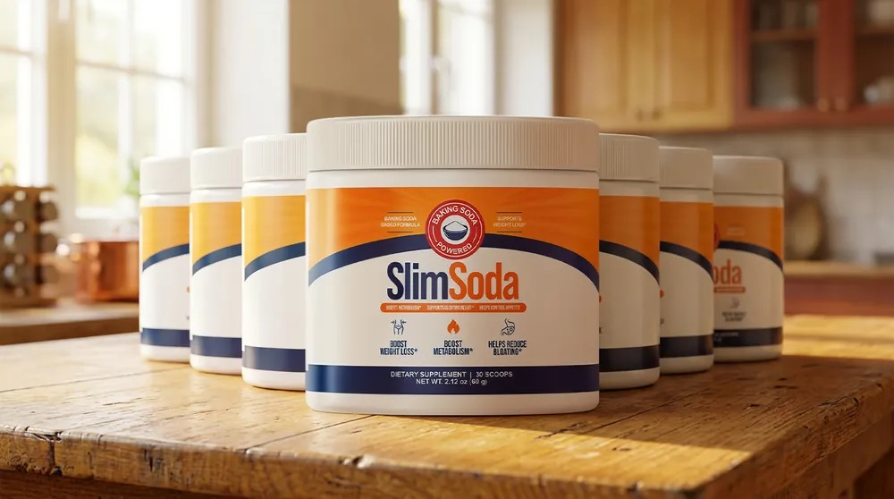

What Is SlimSoda And How Does It Work?
You eat less than the thin woman at work. You move more than she ever has. And your body holds on to every single pound like it is keeping score.
The problem was never your discipline. Inside your gut, a set of specialized cells controls the burn-or-store switch — the mechanism that decides whether the food you eat becomes energy or gets packed away as fat. When the environment in your gut turns too acidic, those cells go dormant. The switch gets stuck on "store." Your brain never receives the signal that you are full. Cravings stay loud. And your body clings to every bite regardless of what the meal plan says.
SlimSoda is a powdered formula built around three specific ingredients — sodium bicarbonate, concentrated gingerol, and bioactive berberine — combined in pharmaceutical-grade forms and an exact ratio. One scoop in a glass of water each morning. The three compounds work in sequence: the first wakes the dormant gut cells, the second protects the satiety hormones they produce, and the third flips the burn-or-store switch back to where it belongs.
This is not a crash diet disguised as a supplement. There is no calorie counting, no meal plan, no injection. The formula targets the underlying mechanism that kept your body storing food it should have been burning — and it does it with a morning ritual that takes roughly three seconds.
SlimSoda Ingredients
Three ingredients. Three jobs. Each one handles a specific part of the burn-or-store switch — and missing any one of them weakens the entire system.
- Sodium Bicarbonate (Baking Soda): The alkalizing agent that neutralizes excess gut acidity and wakes the dormant enteroendocrine cells responsible for producing satiety hormones like GLP-1 and GIP. Once those cells are active again, your body can finally send the "full" signal it has been holding back.
- Concentrated Gingerol (Ginger Extract): A natural inhibitor of DPP-4, the enzyme that breaks down your fullness hormones before they ever reach the brain. Gingerol keeps the signal alive long enough for the message to land — which is why baking soda alone, without this protection, rarely produces a noticeable change.
- Bioactive Berberine: Activates AMPK, the metabolic switch that tells your cells whether to burn food for energy or stack it around your waist. When AMPK is suppressed, the body defaults to storage. Berberine flips it back toward burning — and the change compounds with each consistent day of use.
The three are not interchangeable and the order matters. Baking soda without gingerol produces a signal that gets destroyed before it arrives. Gingerol without berberine protects a signal that never reaches the metabolic instruction set. The formula works because all three act together, in controlled ratios that a DIY kitchen mix cannot replicate.
SlimSoda Side Effects
The entire formula is made from ingredients the body already encounters in nature — baking soda, ginger extract, and berberine — delivered in standardized pharmaceutical-grade forms. Every batch is manufactured in an FDA-registered facility under strict quality protocols, using controlled ratios rather than the inconsistent powders found in grocery-store aisles.
Because the formula supports the body's own digestive signaling rather than forcing a pharmacological override, it works with the gut instead of against it. There are no stimulants, no synthetic hormones, and no compounds that artificially suppress appetite by altering brain chemistry.
Since launch, there have been no widespread reports of adverse reactions among users following the recommended dosage. Some women notice a brief adjustment in digestion during the first few days as the gut environment begins to shift — a normal response that typically settles on its own. As with any dietary supplement, anyone with an existing medical condition or currently taking prescription medication should consult a healthcare professional before starting.
SlimSoda Dosage
One scoop. One glass of water. Every morning.
That is the full routine. No complex schedule, no multiple daily doses, no timing windows to track. Mix a single scoop of SlimSoda into water first thing in the morning and move on with your day. The three ingredients begin their work in sequence — waking the gut cells, protecting the hormones, activating the metabolic switch — while you eat breakfast, commute, and forget you even took it.
Each tub contains a full 30-day supply. The manufacturer recommends a minimum of 90 days of consistent use to give the burn-or-store switch enough time to fully reset — which is why multi-tub packages are available at a lower per-unit cost. The first signs often appear earlier: reduced food noise, smaller portions that feel satisfying instead of forced, less bloating by evening. But the deeper metabolic shift that changes what the scale says builds with weeks and months of daily consistency.
Do not exceed the recommended dose. More is not faster — the formula is calibrated around exact ratios, and taking extra does not accelerate the mechanism.
SlimSoda – Refund Policy
SlimSoda comes with a 60-day money-back guarantee. Two full months to use the product as directed and see how your body responds.
The guarantee exists because the manufacturer trusts what happens once the burn-or-store switch starts moving. Sixty days covers the window where most women notice the first tangible shifts — quieter cravings, less mid-afternoon noise, clothes fitting differently. If none of that happens, you get your money back.
For complete terms and conditions, visit the official SlimSoda website directly.
SlimSoda Customer Reviews
 Miriam Vasquez
Denver, CO
Verified Purchase – 6 Bottles
Miriam Vasquez
Denver, CO
Verified Purchase – 6 Bottles
"I hit 172 and could not look at myself anymore. I skipped every pool party last summer because I could not handle the idea of being seen in a swimsuit. My sister is naturally thin — eats whatever she wants, never exercises — and I was doing everything right and still gaining. Three months on SlimSoda and I am down to 148. My thighs dropped two full sizes. The puffiness in my face that made me look exhausted even after eight hours of sleep is gone. I have actual energy to work out now instead of dragging myself through it. I wore shorts to the grocery store last week and did not once pull at the hem."
 Vanessa Reyes
Tampa, FL
Verified Purchase – 6 Bottles
Vanessa Reyes
Tampa, FL
Verified Purchase – 6 Bottles
"I used to only lose weight if I literally starved myself — and then it came back double. After my second kid I gave up. I told my husband I was just going to be this size forever. A friend sent me the SlimSoda link and I almost deleted it because I was so tired of trying things. Three months later I am down 38 pounds. My belly shrank enough that my old jeans button without me having to lie down first. Even my stretch marks lightened. The food noise is the part I still cannot believe — I used to stand in front of the fridge five minutes after dinner, just looking. Now I finish eating and food leaves my mind."
 Melinda Foster
Charlotte, NC
Verified Purchase – 3 Bottles
Melinda Foster
Charlotte, NC
Verified Purchase – 3 Bottles
"Eighteen pounds in the first month. I changed nothing else — same meals, same walks, same schedule. The bloating went first. I used to wake up flat and by 3 PM my stomach looked like I was five months along. That stopped within the first two weeks. Then the scale started catching up. My skin feels firmer around my jawline and I can wear fitted tops without tugging at the fabric around my midsection. My daughter told me I look like I did in her kindergarten photos. I cried in the kitchen."
SlimSoda – Where To Buy
SlimSoda is available exclusively through its official website. It is not sold on Amazon, eBay, Walmart, or any third-party marketplace.
The supplement space is filled with unauthorized sellers repackaging expired, diluted, or outright counterfeit products under convincing labels. With a formula that depends on exact ratios of pharmaceutical-grade ingredients — where the wrong form of berberine or a weak ginger extract renders the whole system ineffective — buying from an unverified source is not just a waste of money. It is a gamble with what you are putting into your body every morning.
The 60-day money-back guarantee, full customer support, and product authenticity verification apply only to orders placed through the official channel. Before completing any purchase, verify you are on the genuine SlimSoda website.
To ensure you're getting the authentic product, most users choose to visit the official website directly.
Is SlimSoda A Scam?
Nothing about this product points to a scam.
The formula is built on a specific, identifiable mechanism — the burn-or-store switch — backed by three ingredients with defined roles in gut cell signaling, hormone protection, and metabolic activation. Every batch is produced in an FDA-registered facility. The 60-day guarantee removes the financial risk entirely. And the growing number of women reporting reduced food noise, steadier energy, and measurable changes on the scale lines up with what the formula is engineered to do.
That said, SlimSoda is not a miracle. It does not replace the basics — reasonable meals, movement, sleep. And it does not work in a week. The women who saw the most dramatic changes were the ones who gave the formula consistent daily time, not the ones who expected the scale to move overnight.
If this is not for you, that is completely fine. Some people manage their weight differently, and there is nothing wrong with that. But if you have counted every calorie, survived every restriction phase, tried the injections, tried the DIY baking soda shot that did nothing — and your body still acts like every meal is an emergency to store — this is a different approach. Give it the sixty days the guarantee covers. If it does nothing, you send it back and you are out nothing but a few mornings.
As with any supplement, consult a healthcare professional if you have questions about your specific situation.

For those who want to verify product details or check current availability, the official SlimSoda website remains the safest and most reliable option.